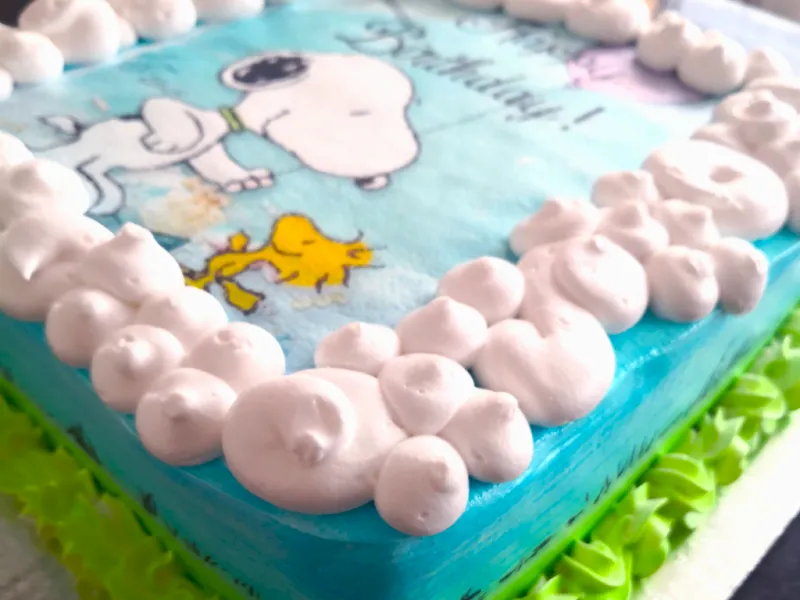

Recetas clásicas horneadas sin mejorantes ni preservantes, pensadas para compartir en familia o acompañar cualquier celebración.
Haz clic en cualquiera de los tamaños para ver porciones, relleno y precio.

Cada celebración tiene su propia historia. Creamos queques personalizados con temáticas especiales, dedicatorias y acabados artesanales horneados frescos bajo pedido.
Explora nuestro catálogo para conocer estilos, tamaños y opciones disponibles para tu ocasión.
Tradicionales al día siguiente o personalizados con 48 h de anticipación
Elige tamaño, color y extras o envía tu diseño por WhatsApp
Adelanto por SINPE Móvil y retiro recién decorado en Desamparados